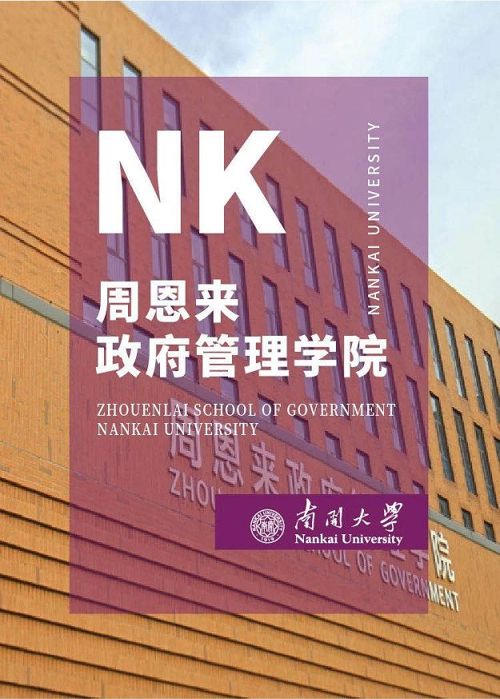

收录于合集

南开大学是国家教育部直属重点综合性大学，是敬爱的周恩来总理的母校。作为国内学科门类齐全的综合性、研究型大学，南开大学在长期办学过程中，形成了文理并重、基础宽厚、突出应用与创新的办学特色。近年来，南开大学入选“双一流”建设高校名单，大力实施人才强校战略和国际化战略，全面实施“4211卓越南开行动计划”，全力汇聚海内外高层次人才，逐步建立了以高端人才为引领、以优秀青年人才引进与培养为支撑的南开特色人才体系。现诚邀海内外优秀人才齐聚南开，共谋发展！
南开大学周恩来政府管理学院于2004年5月成立，由政治学系、社会学系、行政管理系、社会工作与社会政策系、国际关系系、社会心理学系、高等教育研究所和专业学位教育中心等组成，涵盖政治学、社会学、公共管理、心理学等多个一级学科。
根据南开大学2020年人才招聘工作的统一安排，周恩来政府管理学院将在全球范围诚聘讲师、助理研究员岗位。

岗位 1
讲师
No.1
基本要求
（1）遵纪守法，品行端正，作风朴实，吃苦耐劳，学风正派，身心健康，具有良好的专业背景和发展潜力。
（2）具有较高的外语水平（英语六级425分及以上，或具有良好的外语听、说、读、写能力）。
（3）应届海外留学回国人员或2020年应届全日制普通高等院校统招统分毕业生（不含在职培养、定向、委培人员），学习成绩优良。
（4）国内高校应聘者须于2020年12月31日前取得与最高学历相符的学位，国（境）外高校应聘者须于2020年12月31日前取得教育部留学服务中心出具的学历学位认证书。
（5）35周岁以下（1984年1月以后出生），博士学位，海内外著名高校（或科研机构）优秀应届毕业博士或出站博士后。来自世界排名前100所高校或国际知名研究机构的优秀应聘者优先。
No.2
拟聘方向
（1）国际政治、国际关系
（2）城市发展与管理
No.3
报名方法
（1）应聘者 登录南开大学招聘与引进系统 在线提交报名信息
网址：zhaopin.nankai.edu.cn
每人在所有岗位中限报1个岗位。
（2）报名截止时间为北京时间 2020年2月28日17:00 。请应聘者务必在截止时间之前完成所有资料填报、上传及提交。
No.4
相关待遇
学校配备青年教师公寓、师资优良的幼儿园(在校内)，附属小学(天津市知名小学)、附属中学(市级重点中学)和附属医院等设施。
相应的基本科研业务费配套。
岗位 2
助理研究员（师资博士后）
No.1
基本要求
（1）具有良好的职业道德和敬业精神，遵纪守法、学风端正，具备成为大学教师所必需的政治素质和道德素养。
（2）年龄35周岁以下，博士毕业三年以内或即将取得博士学位的应届毕业生。
（3）国内外一流大学优秀博士毕业生，具有较高的学术水平。博士（或硕博连读）在读期间以第一作者或导师第一作者、本人第二作者发表CSSCI/SSCI期刊论文至少3篇，具备独立承担省部级以上科研项目或参与完成重大科研项目的能力，具备成为学校专任教师的发展潜力。
No.2
拟聘方向
依托学院研究中心、高端人才团队及重大或重点项目团队 ，拟在政治学博士后流动站（含国际关系）、 公共管理博士后流动站（含行政管理、城市管理、社会保障、教育经济与管理）、社会学博士后流动站（含社会工作与社会政策、社会心理学）内设立助理研究员（师资博士后）岗位。
No.3
报名方法
有意申报者请提前与研究中心或团队/课题组负责人进行沟通联系，达成初步意向后，提供如下材料：
1. 个人简历及研究计划（见阅读原文下载附件1）。
2. 已发表的高水平代表作1-2篇。
3. 导师推荐信1封。
导师名录请参考我院官方网站：
http://zfxy.nankai.edu.cn/page/faculty-page
有意申请者请在 2020年3月31日前 将上述申请材料打包发送至学院人事邮箱:
No.4
相关待遇
（1）参照南开大学事业编制人员（中级）职称薪酬标准享受岗位薪酬。
（2）享受学院及团队/课题组提供的津贴配套。
（3）享受南开大学住房补贴。
（4）享受子女入托、入学（小学）等学校事业编制教师待遇。
（5）入站后由学校认定中级专业技术职务，享受基金申请、出国进修、项目申报等博士后政策。
No.5
培养与考核
助理研究员（师资博士后）实行聘期制，第一聘期3年，第二聘期1-3年，最多聘任两个聘期。每个聘期均有年度考核及聘期考核。
（1）年度考核
第一个聘期内，连续两次年度考核不合格，则终止聘任合同，办理退站手续。
第二个聘期内，一次年度考核不合格，则终止聘任合同，办理退站手续。
（2）聘期考核
第一个聘期结束前三个月，根据合同规定工作任务，进行聘期考核，考核合格可申请续聘第二聘期或出站，考核不合格办理博士后退站手续。
第二聘期开始后可申请评聘学校副高级职称或“南开大学百名青年学科带头人培养计划”，申请成功则转聘至相应岗位，同时办理博士后出站手续。至第二聘期结束时若未能转聘副高级职称岗位，则办理博士后出站手续，不再签署聘用合同。